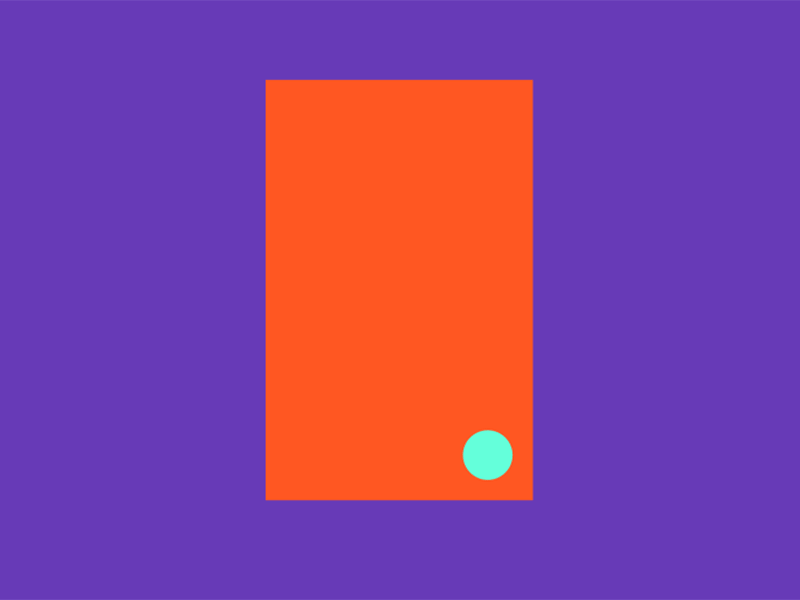

primary learners
Children (6–12) and teenagers (13–18).
Your tiny genius who packs big topics into modular bricks that click.
Compactino is a planned project for a minimalist, yet potentially powerful Swiss Army knife for the digital age. Its vision is to become an innovative design portal and an Education-as-a-Service product that could change how the world learns about Artificial Intelligence. Its core motivation is the idea that no one should feel lost. The project's ambition is to show that we can fold the chaotic world we live in into one small, clear package.


The project tries to address the growing gap between rapid AI development and the skills of everyday people. The goal is to replace long, complex manuals with nano-lessons — short, 30-60 second motion-design tutorials. The platform is conceived as a universal library of atomic workflows. Here, the word atomic refers to a vision of something tiny that has the potential to become a basic building block for a larger system. Each clip is being designed not just as a lesson, but as a modular system similar to Lego. The planned visual style intentionally avoids the cold look of technology; instead, it seeks to use interactivity and haptic response to potentially help reduce the stress of learning something new.


The main guide should be a character — a small, calming square named Compactino. Its body is designed as a functional toolkit that can transform exactly as needed. Compactino should be able to slide, open, fold, or pack. In difficult moments, it can unfold to provide the user with a clear map of the terrain. This planned transformation aims to make the process easy to understand and tries to turn tech anxiety into a playful and safe routine.

The proposed educational philosophy is based on the scientific principles of nano-learning and atomicity. These interactive, bite-sized lessons are conceived as a possible pedagogical choice that should respect the attention spans of seniors, children, and mobile users. The project wants to focus on a small wins strategy — little victories that a user could experience at every step. Each atomic module is designed to try and bring an immediate sense of success and help break down the mental barriers of difficult topics.


The platform should not present AI as an isolated technology, but as a simple construction set. Compactino would play the role of a cognitive guide, showing through its transformations that even a potentially complex task can be broken down into small, manageable parts.

Children (6–12) and teenagers (13–18).
With a special focus on the 65+ group.
Teachers, libraries, and parents looking for inclusive materials.
Companies that might need ethical employee onboarding through planned Education Packs.

Compactino is conceived on European-first foundations. Our key planned difference is Compliance-by-design — an effort to be in harmony with regulations from the very first draft.

We intend to implement Articles 4 and 5 of the EU AI Act. The project seeks to respect GDPR-K, DSA, and UNICEF guidelines.

Unlike other alternatives, the project's goal is to protect user privacy and serve the public interest without the pressure of ads.

The intent of the project is to try and establish Compactino as a possible partner for public institutions. The future roadmap counts on synergy with EU priorities for 2026, where Compactino could act as a tool for AI literacy. The plan is to try and scale through EIC schemes and potentially turn this digital product into a deep-tech ecosystem.


In the early years, we think of Compactino as an interactive app with the potential to grow into a scientific innovation. In planned cooperation with universities, we would like to study the effect of nano-lessons on long-term memory and try to measure a possible decrease in tech anxiety.

We believe that if we try to turn technology into a playful tool with zero pressure, we might overcome the current challenges. Our goal is to bring small steps for big relief and trust built through a predictable ritual. We hope that even the most complex systems can perhaps be explained with humanity and simplicity.


If our tiny bricks sparked a big idea, let's see if we click.
Compactino is currently just a single module, and we are looking for the hands that will help us build the next layer. The warmest part of starting small is meeting the people who'll help stack this vision into something big. Whether you're a parent, a teacher, a researcher, or a fellow studio — drop us a line.